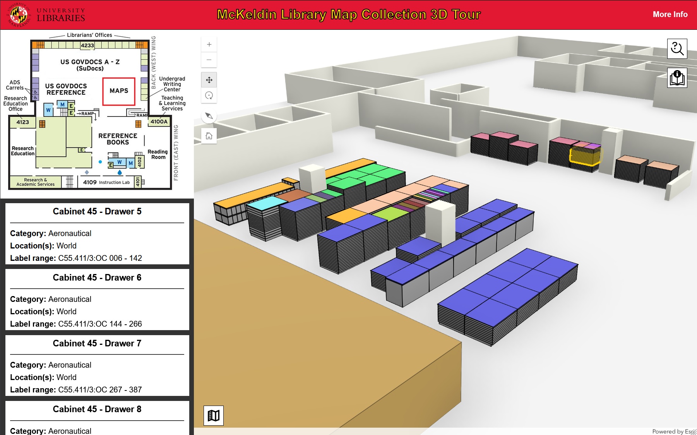
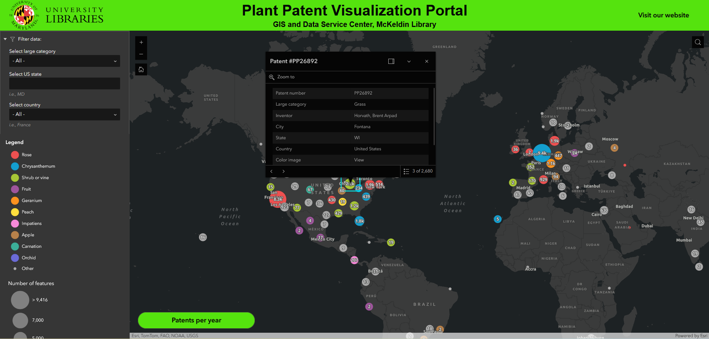
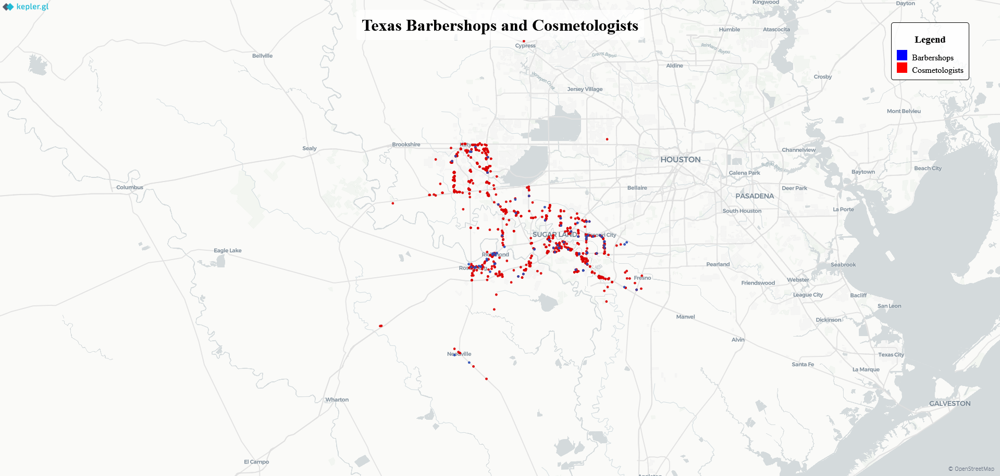
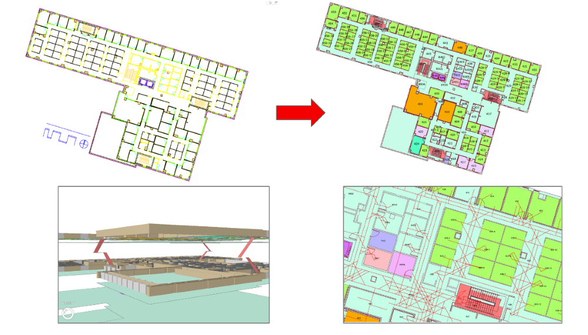
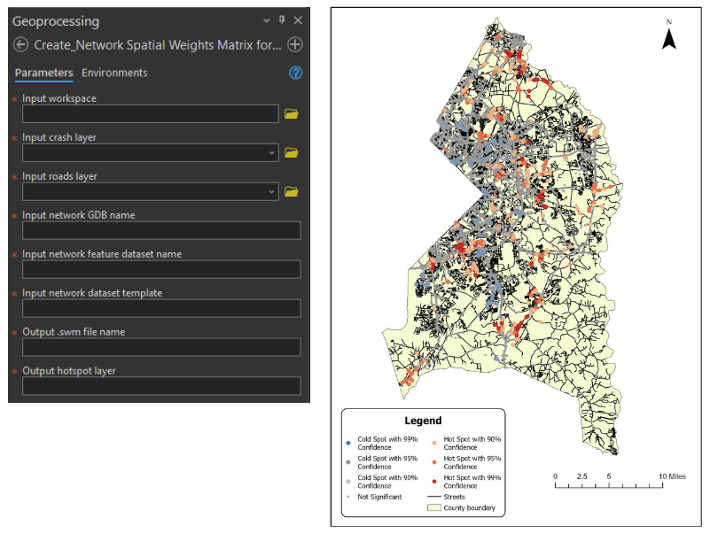

McKeldin
Library 3D Tour Web Application

My masters capstone project arose from my job as a GIS graduate assistant at McKeldin Library. I
wanted to replicate the 3D workflow
established by ASU's groundbreaking 3D Explorer web application. It features a
3D model, replicated through hours of field measurements, of the McKeldin Library's map collection,
which is housed in 50 different
cabinets and bookcases. It is uncatalogued, so to promote user discovery and exploration, a query
system was devised based on known
information about the contents of individual drawers or nooks. Users can search by map category
(topographic, aeronautical, atlas, etc.),
container ID number, or geographic location. Development of the application was done with HTML, CSS,
JavaScript, and the ArcGIS Maps
SDK for JavaScript.
Plant Patent Portal Web Application

This is an Experience Builder-powered web application that showcases University of Maryland McKeldin
Library's database of United States Patent and Trademark Office (USPTO) plant patents. Users can
filter the data by plant category or inventor country or US state. The dataset consists of over
40,000
entries (one per inventor, as some patents have more than one inventor) that were cleaned up by the
staff
of the GIS and Data Service Center. More information about this project can be found by clicking the
"About this Project" link in the web application.
Texas
Barbershops and Cosmetologists Web Application

This is a small, simple web app that I created while working under Dr. Kathleen Stewart for the
purposes of
visualizing selected Barbershops and Cosmetologists in the greater Houston area. This app with
created with
Kepler.gl, which allows for the creation of simple, front-end only web apps, and was used as a
visual aid by
researchers at the UMD School of Public Health.
ArcGIS Indoors and IPS Work

I have worked extensively on UMD's ArcGIS Indoors implementation project, creating level-aware maps
of various
buildings on campus, testing and doing quality control on IPS deployments, and created mobile apps
to help guide
users to assets within buildings. I have also created realistic 3D models of buildings, both
exterior and interior
(including assets such as cabinets, offices, etc.) using ArcGIS Pro. These indoor models have then
been deployed
by my coworkers and I into fully-functional mobile apps for testing.
Custom ArcGIS Tool for Creating Network Spatial Weights Matrices

This custom tool was created to automate the process of creating Network Spatial Weights Matrices
(NSWM) for enhancing
network-based analysis of car crashes in Prince George's County, MD. It takes multiple inputs,
including a network
dataset template, to produce a .swm (spatial weights matrix) file that weighs the severity of car
crashes (property damage,
injury, fatal). This file can then be used in several spatial statistics tools, including Local
Moran's I and Getis-Ord Gi*
hot spot analysis (as shown above on right), to analyze where the most serious crashes in the county
tend to be clustered.